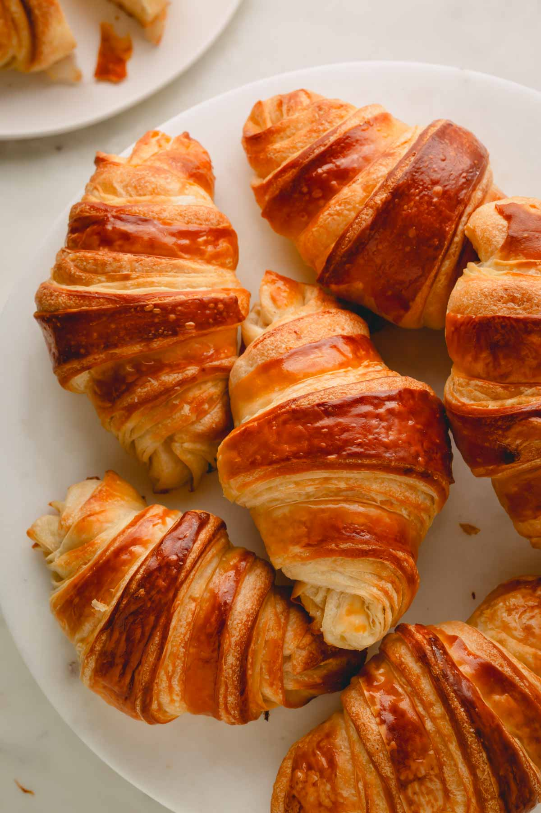

El Arte del Croissant Perfecto

El croissant es una de las piezas más famosas de la panadería. Su secreto está en el hojaldre: capas y capas de masa y manteca que, al hornearse, se inflan y quedan crujientes por fuera y tiernas por dentro.
¿Cómo se hace?
Se prepara una masa con harina, leche, azúcar y levadura. Después se le agrega una capa de manteca fría y se dobla varias veces. A cada doblez se lo llama "vuelta", y cuantas más vueltas, más capas tiene el croissant.
Consejos
- La manteca tiene que estar bien fría.
- Hay que dejar descansar la masa en la heladera entre cada vuelta.
- Pintarlos con huevo antes de hornear les da ese color dorado.
Variedades por relleno y sabor
- De mantequilla (tradicional): el clásico francés sin relleno, valorado por su ligereza y capas de hojaldre.
- De almendras: relleno de crema de almendras y decorado por fuera con almendras fileteadas y azúcar glas.
- De chocolate: relleno o bañado con chocolate clásico.
- De pistacho: relleno con crema o pasta dulce de pistacho.
- De jamón y queso: una opción salada muy popular para desayunos o meriendas.
- De salmón: versión salada gourmet que suele incluir salmón ahumado y queso crema.